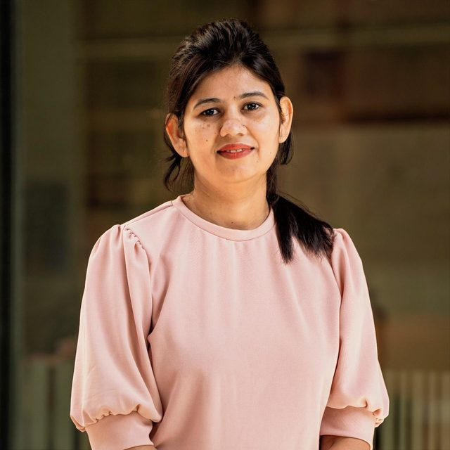
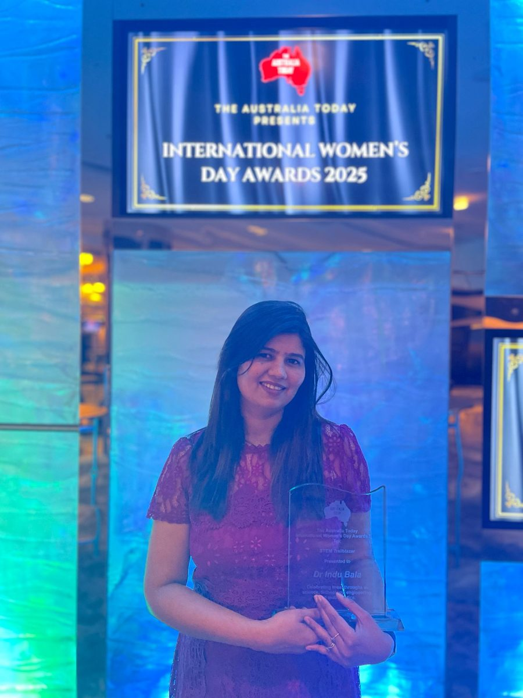
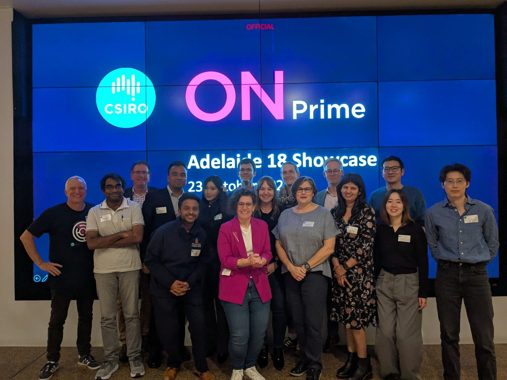

Indu Bala
Lecturer, School of Computer Science and Information Technology, Adelaide University
I’m an applied mathematician working on optimisation and trustworthy AI. I design stochastic and evolutionary algorithms, and combine them with machine learning and language models to support high-stakes decisions in healthcare and infrastructure.
About
I am a Lecturer in the School of Computer Science and Information Technology at Adelaide University and a member of the Australian Institute for Machine Learning (AIML). My work sits between mathematics and computing: I build optimisation and modelling methods with clear theoretical footing, then take them into messy real-world problems where decisions carry consequences.
From 2022 to 2024 I was a postdoctoral researcher at the University of Adelaide on an NHMRC-funded project improving the safety of implantable medical devices, where I developed machine learning and NLP methods for adverse-event reports. Before that I was an Assistant Professor in the Department of Mathematics at Presidency University, India.
I hold a PhD in Applied Mathematical Sciences (2021). My doctoral research, funded by industry, developed stochastic and nature-inspired optimisation algorithms for complex, multimodal problems and applied them in engineering and healthcare. I also hold an MPhil and an MSc in Applied Mathematics, and I collaborate with researchers in Korea, India, the Netherlands, Malaysia and Spain.
Research
Stochastic and evolutionary optimisation
New swarm and physics-inspired algorithms for hard, multimodal problems, with attention to why they work: orthogonal initialisation, crossover and mutation operators, niching, and explainable search behaviour.
Trustworthy, uncertainty-aware AI
Methods that tell decision-makers how far to trust a prediction, including conformal prediction and robustness testing of language models used in clinical and safety settings.
Clinical NLP and pharmacovigilance
Detecting and explaining adverse events in medical device and drug-safety reports, from classical machine learning to retrieval-augmented generation over regulatory databases.
Scientific ML and infrastructure
Physics-informed neural networks for differential equations, and optimisation and forecasting for water distribution networks and power systems.
Publications
For citation counts and the most current list, see my Google Scholar profile.
Recognition


- 2026Finalist, Women in AI APAC Awards 2026Foundational AI category
- 2026Finalist, Women in Innovation Awards (South Australia)Maths and Data category
- 2025Winner, STEM Trailblazer AwardThe Australia Today International Women’s Day Awards, February 2025
- 2025CSIRO ON Prime research translation program, team lead
- 2025Early and Mid-Career Researcher grantFaculty of Sciences, Engineering and Technology, University of Adelaide
- 2024Winner, Data Science Pioneer AwardWomen of Colour in STEM Awards, STEM Sisters, December 2024
- 2024Australia–India Women Researchers’ Exchange FellowshipProject: A multi-objective framework for optimising water management and advancing urban sustainability
- 2024CASS Foundation funding for international conference travel
- 2024Conference funding, WIMSIG Conference
- 2023Funding to compete in the UN Datathon
In the media
- InterviewEmpowering women in STEM: Dr Indu Bala on her AIWE fellowship experienceAustralian Researcher Cooperation Hub (ARCH-India), on women in STEM and trustworthy AI in healthcare
- FeatureA feature on my journey through mathematics and AIMagnify Me, the STEM Sisters monthly magazine
- NewsDr Indu Bala wins STEM Trailblazer AwardAdelaide University news
- VideoA web app for optimising product pricing for farmersUN Datathon 2023 entry
Teaching
I teach across applied mathematics, optimisation and data science, at undergraduate and postgraduate level.
- MATH4012Stochastic OptimisationUndergraduate and postgraduate
- COMP SCI 3317Using Machine Learning ToolsUndergraduate
- COMP1045Applied Machine LearningUndergraduate
- COMP6005Introduction to Data Science, Ethics and PrivacyPostgraduate
- MATHS 7097Data Science Research ProjectPostgraduate
Research supervision
- 2026Forecasting non-stationary data with drift and regime detectionMaster of Data Science research project
- 2026Risk-aware information extraction from large-scale text using NLP and large language modelsMaster of Data Science research project
- 2025–Physics-informed neural networks for efficient, generalisable solutions of differential equations in complex physical systemsPhD
- 2025–Exploring dynamic knowledge structures through transformer-based embedding techniquesMaster’s research
- 2025–AI-driven text analytics for early detection of mental health risksMaster’s research internship
- 2024–Adverse-event detection and advisory systems for the FDA database using machine learning and retrieval-augmented generationMaster’s research
- 2024–25A multi-objective AutoML system for optimising neural network architectureAdelaide Summer Research Scholarship
I welcome enquiries from prospective HDR and Master’s students interested in optimisation, trustworthy AI or clinical NLP. Please email me with a short description of your background and interests.
Talks & service
Invited talks
- 2027ASCE Forensic Engineering Conference (invited, March 2027)
- 202532nd National Symposium on Mathematical Sciences (SKSM32), Cyberjaya, Malaysia
- 20253rd International Conference on Recent Trends in Mathematical Sciences (ICRTMS-2025), Shimla, India
- 2025National Conference on Mathematical and Statistical Modelling, Simulation and Optimization of Energy SystemsIndonesia, June 2025
- 2025Summer School on Evolutionary Algorithms and Machine LearningNIT Jalandhar, India, June 2025
- 2025Expert lectures on optimisation in water network systems (NIT Jalandhar, January) and mathematics in machine learning (SLIET Longowal, February)
Conference presentations
- 2025Robust or suggestible? Exploring non-clinical induction in LLM drug-safety decisionsNeurIPS 2025 Workshop on GenAI for Health, San Diego, USA
- 2025Enhancing explainability and reliable decision-making in PSO through communication topologiesGECCO 2025, Málaga, Spain
- 2024Orthogonally initiated particle swarm optimization with advanced mutationGECCO 2024, Melbourne, Australia
- 2024Detecting public emotion and concern reports in voluntarily reported mesh implant dataICACIS 2024, Singapore
- 2024A robust machine learning method for multiclass adverse event classificationAustralian Data Science Conference
- 2023Optimizing neural network training: the impact of Lévy flight and chaos in the artificial electric field algorithmANZIAM Conference, Adelaide
Service and editorial
- 2026Reviewer, GenAI4Health Workshop, NeurIPS 2026
- 2025International Advisory Committee, rTIME-2025National Institute of Advanced Manufacturing Technology, Ranchi, India
- 2025Technical Committee, Summer School on Evolutionary Algorithms and Machine Learning, NIT Jalandhar
- 2024Session chair, ANZIAM 2024
- EditorialEditorial board, Engineering Mathematics
- ReviewReviewer board, Medicon Medical Sciences
Industry engagement
- 2023Visiting Data Analyst, University of South Australia
- 2021–22Research Consultant, Arogya PanditArthritis intelligence platform
- 2021Market Research Analyst, Myntra
Memberships
Association for Computing Machinery (ACM), Australian Academy of Science, INSTICC, World Data System, and MathTech Thinking Foundation.
Contact
School of Computer Science and Information Technology
Adelaide University
Adelaide, South Australia 5005
Also on Adelaide University Researcher Profiles, ResearchGate and Scopus.